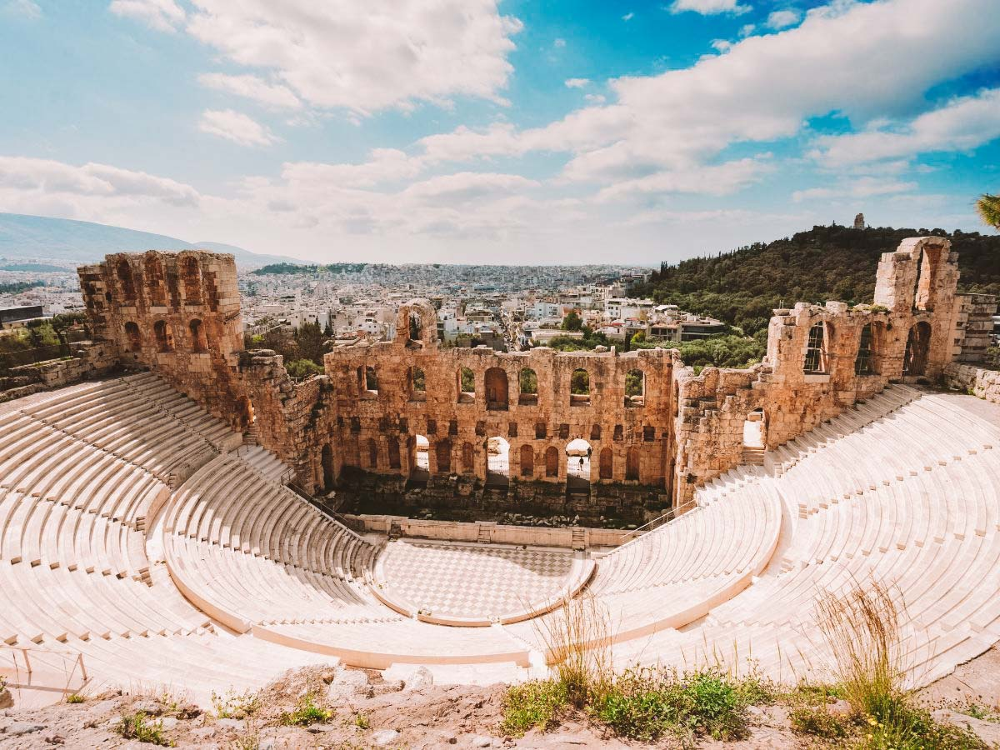

Os Principais Pontos Turísticos
A Grécia é um destino turístico diversificado, com pontos históricos, ilhas paradisíacas e uma cultura vibrante. Os principais pontos turísticos incluem a Acrópole de Atenas, as ilhas de Santorini, a Praia de Navagio.
Santorini
Santorini é uma das ilhas Cíclades no Mar Ageu. Ela foi devastada por uma erupção vulcânica no século 16 A.C

Teatro de Herodes
O Odeão de Herodes Ático foi construído por Herodes Ático, para comemorar a memória de sua falecida esposa Regilia

Templo de Zeus
O templo de Zeus Olímpico, dedicado a Zeus em sua qualidade de rei dos deuses do Olimpo.

Navagio Beach
A praia do Naufrágio ou Enseada dos Contrabandistas, é um dos cartões-postais mais icônicos da Grécia.

Partenon
O Partenon foi um templo antigo dedicado à deusa Atena, construído na Acrópole de Atenas no século V a.C.